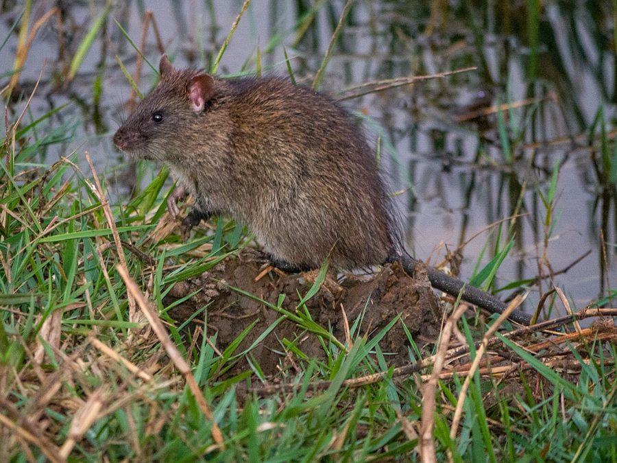

घुँसLesser Bandicoot Rat
Bandicota bengalensis · Muridae · MAM-0013

- Scientific name
- Bandicota bengalensis (Gray, 1835)
- Family
- Muridae
- Hindi
- घुँस
- Status here
- native
- IUCN
- LC
When to look कब देखें
Present all year.
घुँस / Lesser Bandicoot Rat
Bandicota bengalensis (Gray, 1835) — Muridae
घुँस (लेसर बैंडिकूट रैट) — पूर्वी उत्तर प्रदेश के खेतों, खलिहानों और अनाज के गोदामों में पाया जाने वाला एक बड़ा, आक्रामक और अत्यंत नुकसानदेह निवासी कृतक (rodent) स्तनधारी जीव है। इसे स्थानीय बोलचाल में "घूस" या "घुंस" भी कहा जाता है। यह रात के समय सक्रिय (nocturnal) होता है और खेतों की मेड़ों व गोदामों की दीवारों के नीचे गहरे और बड़े बिल खोदता है। इसकी सबसे बड़ी विशेषता यह है कि इसकी पूँछ इसके सिर-धड़ की लंबाई से छोटी (shorter tail) होती है, और इसका शरीर गहरे मटमैले भूरे रंग के खुरदरे बालों से ढका होता है। खतरा महसूस होने पर यह अत्यंत आक्रामक रुख अपनाता है, घुरघुराता है और अपने सामने के दांतों से हमला कर सकता है। यह गन्ने, गेहूं और धान की फसलों की जड़ों व अनाज को खाकर भारी आर्थिक नुकसान पहुँचाता है।
Quick Identification त्वरित पहचान
| Feature | Description |
|---|---|
| Size | Large, stout rat; head-body length 18–25 cm; tail length 14–20 cm; weight 200–500 g |
| Tail | Coarse and scaly, always distinctly shorter than the head-body length |
| Fur | Coarse, dark grey-brown with stiff black guard hairs (bristles) standing erect when angry |
| Head | Broad and blunt head with a rounded, downward-curved snout; orange-yellow incisors |
| Burrows | Excavates large soil mounds around deep, complex burrows with multiple entries |
| Behaviour | Highly aggressive; growls, grunts, and chatter teeth when cornered or threatened |
Field tip: Look for large mounds of loose, excavated soil next to deep burrows on field bunds. Watch for burrow entrances blocked with soil plugs during the day. In crop fields, look for chewed wheat or sugarcane stalks cut at a sharp 45-degree angle.
Morphology आकारिकी
Biometrics (typical measurements for adult specimens in local fields):
| Measurement | Range |
|---|---|
| Head-body length | 18–25 cm |
| Tail length | 14–20 cm |
| Weight | 200–500 g |
Body details: The body is stocky and robust. The head is broad, ending in a blunt snout. The upper incisors are wide, strong, and orange-yellow, adapted for heavy gnawing. The ears are small, rounded, and covered in fine hairs. The dorsal fur is dark greyish-brown to blackish-brown, containing long, stiff black bristles (guard hairs) that stand erect during aggression. The ventral fur is lighter silvery-grey. The tail is shorter than the head-body length, dark, scaly, and covered with short, stiff hairs. The forepaws feature strong claws adapted for extensive burrowing.
Behaviour & Ecology व्यवहार और पारिस्थितिकी
Burrower and food hoarder.
- Tunneling engineering: Excavates extensive, deep burrow networks with multiple chambers for nesting, latrines, and food storage. The burrow entrances are often plugged with soil from the inside during the day to keep out predators.
- Hoarding behaviour: Famous for harvesting entire ears of wheat and paddy during crop maturation, carrying them back to store in underground granary chambers. A single burrow system can contain up to 2–4 kilograms of grain.
- Aggression defense: Unlike other rodents that run away, the bandicoot rat stands its ground, growling, puffing up its bristly fur, and biting aggressively if cornered.
Vocalisations
- Defensive sounds: Emits low, harsh, guttural growls and loud teeth-chattering when threatened or cornered.
- Stress calls: Young pups and cornered adults make high-pitched, sharp squeaks during intraspecific fights or predator attacks.
Ecological Role पारिस्थितिक भूमिका
Subterranean consumer.
- Bioturbation: Digging activity mixes deep soil layers, introducing organic matter, though it weakens irrigation bunds and soil stability.
- Trophic connector: Serves as a major, calorie-dense prey resource for native raptors, snakes, and mammalian carnivores.
Life Cycle / Phenology जीवन चक्र
- Breeding: Breeds continuously throughout the year, with reproductive rates peaking during the spring (wheat harvest) and autumn (rice harvest) seasons.
- Reproduction: Gestation lasts 21–23 days. The female gives birth to a large litter of 5–12 blind, hairless pups inside a grass-lined nesting chamber.
- Maturity: Pups open their eyes in 14 days and are weaned by 25 days. They reach sexual maturity within 3–4 months.
Host Plants or Prey आहार
Diet: Granivorous and herbivorous.
- Agricultural crops: Wheat (Triticum aestivum [FLR-0051 Wheat]), Paddy (Oryza sativa [FLR-0014 Paddy]), Maize, and sugarcane stalks.
- Wild vegetation: Tubers, root rhizomes, and wild grass seeds.
- Alternative food: Soil grubs and freshwater snails.
Predators / Natural Enemies शत्रु
- Birds of prey: Black-winged Kites (such as [BRD-0038 Black-winged Kite]), Barn Owls, and Eagle Owls hunt them at night.
- Reptiles: Spectacled Cobras (such as [REP-0004 Indian Cobra] - check ID) and Indian Rat Snakes (such as [REP-0002 Indian Rat Snake]) crawl into burrows to consume adults and pups.
- Mammals: Small Indian Civets (such as [MAM-0012 Small Indian Civet]) and jackals ambush them on field bunds.
Agricultural / Human Relevance कृषि प्रासंगिकता
Severe agricultural pest.
- Crop loss: Bandicoot damage in Basti fields can reduce crop yields by 10–15%, as they chew sugarcane base joints and carry wheat ears underground.
- Post-harvest salvage: In Basti, landless laborers traditionally dig open bandicoot burrows after the wheat harvest (katni) to recover the hoarded clean grain ears, a practice known locally as Ghoons-nikalna.
- Control: Farmers use traditional iron traps (पिंजरा), flood burrows, use rodenticide baits, or maintain natural predator populations (snakes and owls) to manage populations.
Expected Locally स्थानीय रूप से अपेक्षित
Not a field record. Written from published accounts for eastern Uttar Pradesh. No confirmed local sighting yet — if you have seen it, that is what the atlas needs.
अभी तक स्थानीय पुष्टि नहीं। यह विवरण प्रकाशित स्रोतों से है, किसी अवलोकन से नहीं।
A common pest in all agricultural blocks of Basti district, including Harraiya, Vikramjot, and Kaptanganj. Their large soil mounds are easily spotted along the clay bunds (dand) separating rice paddy fields.
Distribution वितरण
Global range: Native to the Indian Subcontinent and parts of Southeast Asia, covering Pakistan, India, Nepal, Bangladesh, Myanmar, and Thailand.
In India: Found across all agricultural plains and suburban districts of the country.
In Uttar Pradesh: Abundant resident across all farming districts.
In Basti district / eastern UP: Highly common in all lowland and upland agricultural ecosystems.
Research Questions शोध प्रश्न
Anyone can investigate these | कोई भी इन प्रश्नों की जाँच कर सकता है
- What is the average amount of hoarded grain found in a single Lesser Bandicoot Rat burrow after the wheat harvest in Basti? / बस्ती में गेहूं की कटाई के बाद एक घुँस के बिल में जमा किए गए अनाज की औसत मात्रा कितनी होती है? — Excavate abandoned burrows post-harvest and weigh retrieved ears.
- Does the Ghoons prefer nesting in high-clay field bunds compared to loose sandy soil? / क्या घूस रेतीली मिट्टी की तुलना में चिकनी मिट्टी वाली मेड़ों में घोंसला बनाना अधिक पसंद करती है? — Map burrow density across different soil zones.
- How does the activity level of bandicoots outside their burrows change during moonlit nights vs. pitch-dark nights? — Track track-counts on sandy paths during different lunar phases.
- What percentage of crop damage in local sugarcane fields is caused by bandicoot rats compared to wild boars? — Conduct damage assessments on affected fields.
- Can children count the number of active burrow holes along a 50-metre stretch of a farm path? — A simple count of open burrow entries.
Similar Species मिलती-जुलती प्रजातियाँ
| Species | Key Difference | हिंदी |
|---|---|---|
| Rattus rattus (House Rat) | Smaller body; tail is longer than the head-body length; fur is smooth; nests inside houses and roofs | चूहा / घरुवा चूहा — लंबी पूँछ, चिकने बाल, कम आक्रामक |
| Bandicota indica (Greater Bandicoot Rat) | Much larger (30–40 cm); tail is equal to the head-body length; less common in dry agricultural fields | बड़ा घुँस — बहुत विशाल आकार |
| Mus musculus (House Mouse) | Much smaller (7–10 cm); delicate tail; nests inside drawers and cupboards | चुहिया — छोटा नाज़ुक शरीर |
Field rule: Large size, coarse grey-black coat with erect bristles, snout rounded downward, tail distinctly shorter than the head-body length, and a highly aggressive growling behavior identify the Lesser Bandicoot Rat.
Taxonomy & Classification वर्गीकरण
Original description. John Edward Gray described the Lesser Bandicoot Rat as Arvicola bengalensis in 1835 in Illustrations of Indian Zoology (Vol. 2, Pl. 20). The type locality was Bengal, India. The genus name Bandicota is derived from the Telugu word pandikokku, meaning "pig-rat". The specific name bengalensis refers to the Bengal region.
Subspecies. Bandicota bengalensis bengalensis is the nominate subspecies present in northern India.
Family and order placement. Placed in the order Rodentia, suborder Myomorpha, family Muridae, subfamily Murinae.
Phylogenetic notes. Bandicota bengalensis is closely related to Bandicota indica, representing a specialized lineage of Asian murines that evolved fossorial adaptations and successfully expanded into human agricultural landscapes.
IUCN status rationale. Listed as Least Concern (LC) by the IUCN due to its extremely wide distribution, massive populations, tolerance of human-altered habitats, and absence of major threats.
Photo Gallery फोटो गैलरी
References संदर्भ
- Gray, J. E. (1835). Illustrations of Indian Zoology; chiefly selected from the collection of Major-General Hardwicke. Vol. 2. London, Adolphus Richter & Co., Pl. 20. [original description]
- Blanford, W. T. (1888). The Fauna of British India, including Ceylon and Burma. Mammalia. Taylor and Francis, London, p. 406.
- Prater, S. H. (1971). The Book of Indian Animals. Bombay Natural History Society, Bombay.
- Agrawal, V. C. (2000). Taxonomic studies on Indian Muridae and Hystricidae (Mammalia: Rodentia). Records of the Zoological Survey of India, Occasional Paper, 180, 1-177.
- ZSI Checklist — Rodents of Uttar Pradesh (2012).
- IUCN SSC Small Mammal Specialist Group (2016). Bandicota bengalensis. The IUCN Red List of Threatened Species. Version 2016-3. IUCN, Gland, Switzerland.
- GBIF Occurrence Data — Bandicota bengalensis, Uttar Pradesh (2010–2025).
Source file: species/fauna/mammals/lesser_bandicoot_rat.md